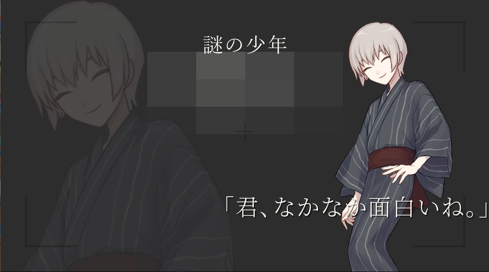

TRACK 01 / ORIGINAL GAME PV
RE:CORD
真実を写すカメラと、兄の失踪をめぐる物語。

WATCH THE MOVIE
♪ 再生ボタンを押すと音が出ます
PROJECT INFORMATION
- CATEGORY
- Original Game PV
- ROLE
- 企画・世界観設計・映像制作
- PROJECT
- 自主制作
GAME PLANNING
CONCEPT
此岸と彼岸の境界が曖昧な町を舞台に、 真実を写す呪具としてのカメラと、 兄の失踪をめぐる物語を構想した オリジナルゲーム企画。
WORLD & STORY
生と死の境界が曖昧な世界で、 失踪した兄の謎を追う物語。 世界そのものに不確かさを持たせ、 何が真実なのかという疑問を 作品の中心に据えた。
KEY ELEMENT / CAMERA
カメラは単なる撮影道具ではなく、 真実を写す呪具として設定。 作品の世界観と物語を結びつける 重要な要素として位置づけた。
VIDEO STRUCTURE & EXPRESSION
CREATIVE DIRECTION
本PVは、単なるゲーム紹介映像ではなく、 物語の「エピソード0」として構成した。 ゲームの設定をすべて説明するのでなく、 視聴者が物語の先を想像できる 映像体験を目指した。
NARRATIVE EXPRESSION
登場人物たちの会話を通して、 物語に関する情報を断片的に提示。 初めて見たときには分からない情報も、 物語を知った後に見返すことで 新たな意味が生まれるように設計した。
VISUAL EFFECT / NOISE
画面を横切るノイズを取り入れ、 映像に一瞬の違和感を加えた。 世界の不安定さや不穏な雰囲気を、 視覚的に表現することを意識した。
HIDDEN DETAILS / AFTER THE END
エンドカードの先に、物語を残す。
タイトルと発売日を提示した後、 「謎の少年」との会話を挿入。 映像が終わったと思わせた先に、 新たな疑問を残す構成とした。
ネタバレあり ｜ 制作意図を詳しく見る

初めて見たとき
PVの最後に登場する謎の少年。 その正体は伏せられ、 意味深な会話だけが残される。
真相を知った後
少年の正体は、主人公の兄。 ゲーム本編で正体が明らかになる構想とし、 真実を知ってからPVを見返すことで、 同じ場面に別の意味が生まれるように設計した。